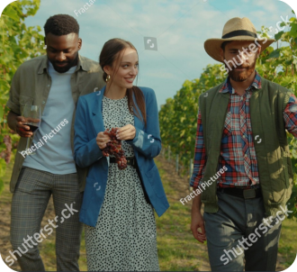

Lucca Bike Tour
A tour of the city and its Surroundings led by a proffesional guide...

Wine Tasting in Tuscany
A tour of the city and its Surroundings led by a proffesional guide...

Cinque Terre Tour
A tour of the city and its Surroundings led by a proffesional guide...

Siena and Surroundings
A tour of the city and its Surroundings led by a proffesional guide...